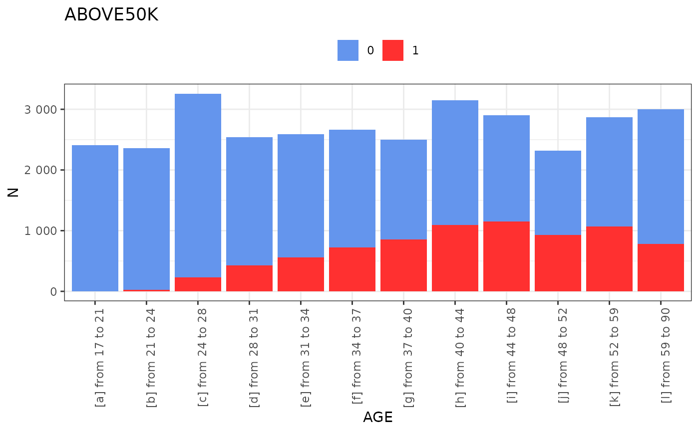
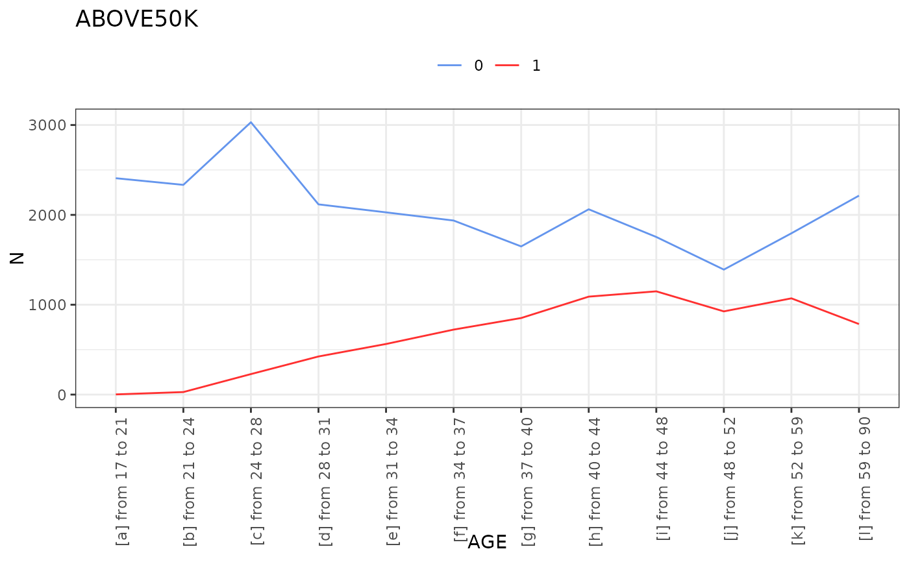
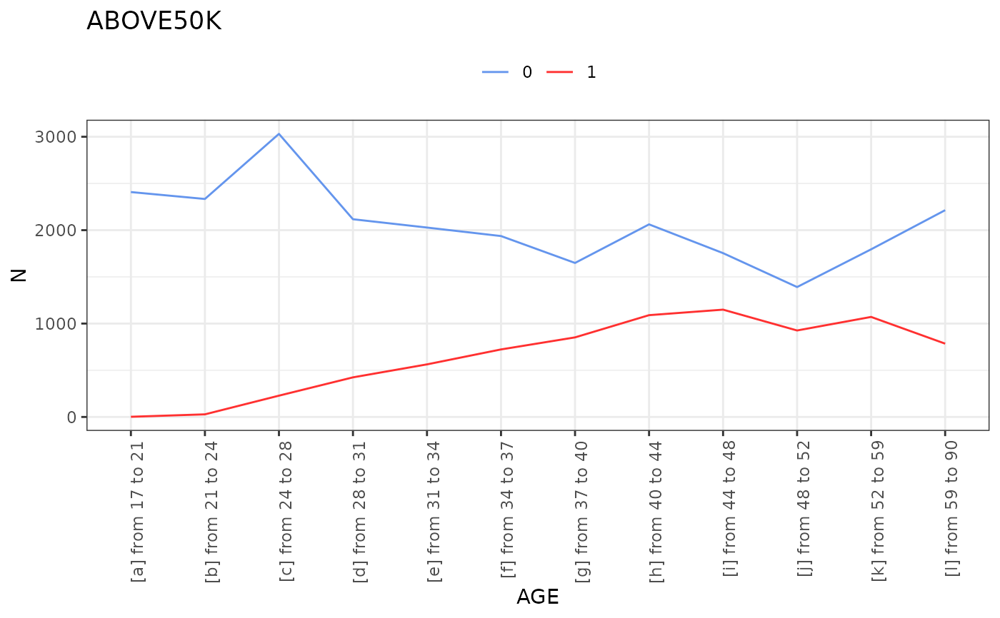
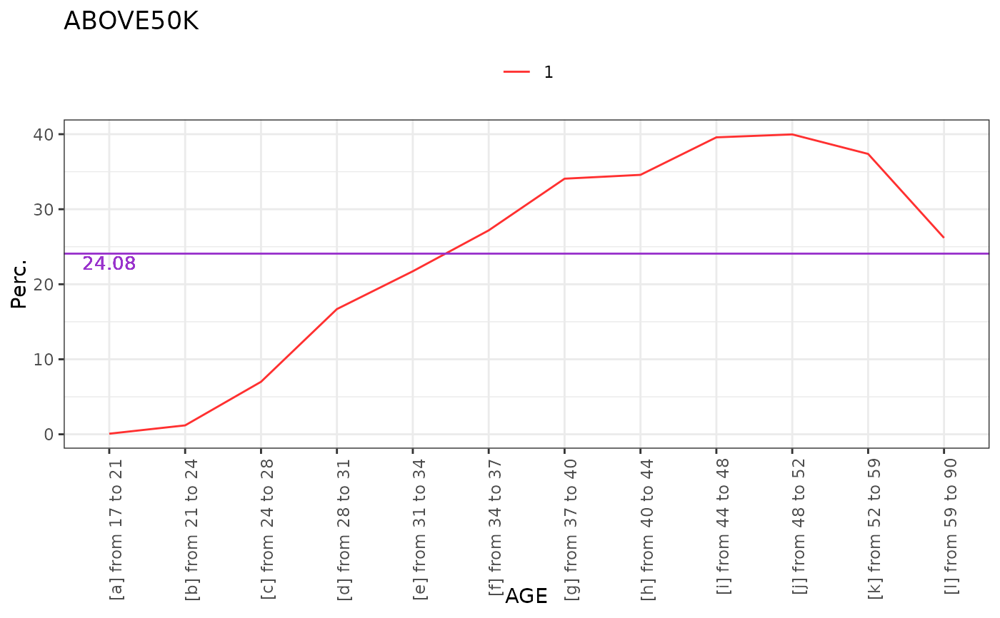
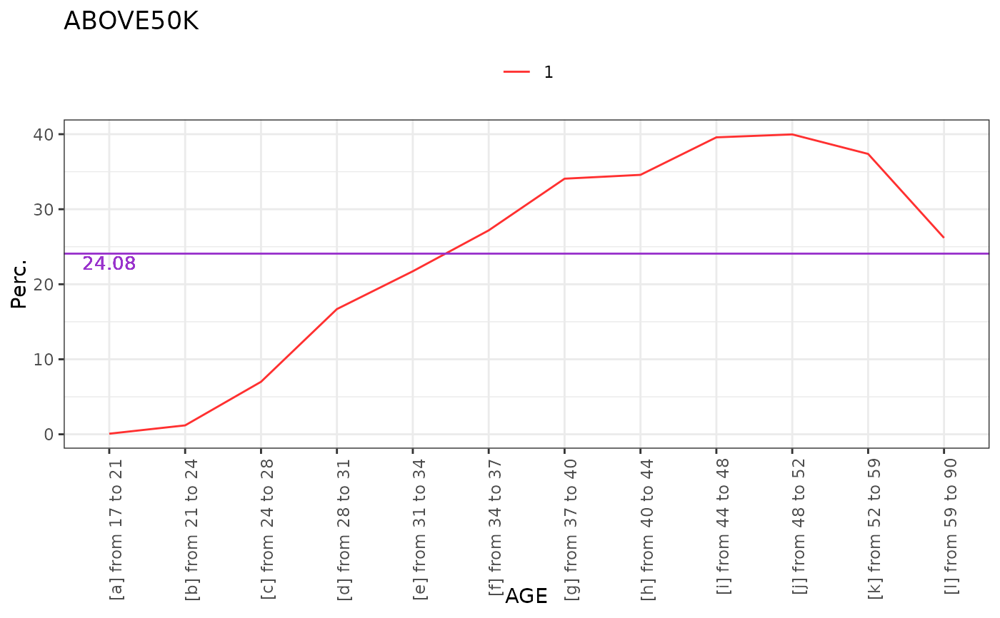

plot method for crossvar object. plot is the main function that will automatically dispatch to plot.crossvar_binary, plot.crossvar_categorical or plot.crossvar_continuous, depending on target type.
Usage
# S3 method for class 'crossvar'
plot(x, ...)
# S3 method for class 'crossvar_numeric'
plot(
x,
show = c("boxplot", "median", "count", "avg", "woe"),
type = c("auto", "bars", "line"),
numvar_as = c("bin", "value"),
metadata = NULL,
print_NA = TRUE,
title = TRUE,
do_plot = TRUE,
...
)
# S3 method for class 'crossvar_categorical'
plot(
x,
show = c("counts", "props", "index", "woe"),
type = c("auto", "bars", "line"),
metadata = NULL,
print_NA = TRUE,
target_NA = TRUE,
only_target_ref_level = FALSE,
lim_y = TRUE,
numvar_as = c("bin", "value"),
title = TRUE,
do_plot = TRUE,
...
)Arguments
- x
object of class "crossvar"
- ...
additional parameter
- show
character - determine on which data considered. By default, the value is "counts". This parameter can only take the following values:
"counts" : the data used is the contigency table created by the function crossvar.
"props" : the data used is the proportion table created by the function crossvar.
"index" : the data used is the index table created by the function crossvar.
- type
character - determine the type of graph. By default, the value is "auto". This parameter can only take the following values:
"auto" : "counts" shows a bar plot and "props" shows a line plot.
"bars" : shows a bar plot.
"line": shows a line plot.
- numvar_as
character, one of "bin" (default),"value": how to display (binned) numeric explanatory variable. 'Bin' will display bins side by side without taking into accounts real values of variable whereas as 'value' will center all bars at bins centers.
- metadata
data.frame - if metadata is loaded in R environment, label of the variables can be used. Default value (NULL) corresponds to no metadata available. The label will be used for the title and the x-axis of the graph.
- print_NA
boolean - By default, the value is TRUE. If FALSE, the missing values of the variable are not printed.
- title
boolean: do we plot default generated title Y/N or character (override title) - default: TRUE
- do_plot
boolean - whether to effectively show the plot or not (internal use to combine plots)
- target_NA
boolean - By default, the value is TRUE. If FALSE, the missing values of the target are not printed.
- only_target_ref_level
boolean - By default, the value is FALSE. If TRUE, only print the values for the target TRUE.
- lim_y
boolean - By default, the value is TRUE. The axis y for the proportion is limited between 0 and 100.
Examples
t <- crossvar(adult,target="ABOVE50K", var="AGE",)
#>
#> INFO:target ABOVE50K detected as type: binary
#> INFO:binary target contains number, automatic chosen level: 1; override using `target_reference_level`
plot(t,"counts")

plot(t,"counts",type="line")


plot(t,"props",print_NA = FALSE, only_target_ref_level = TRUE)
 
